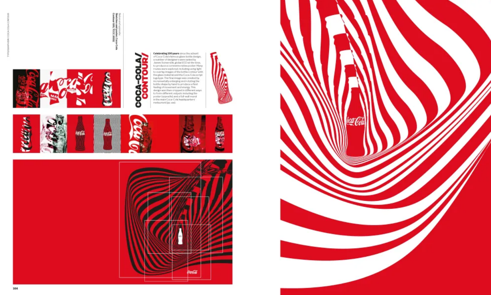
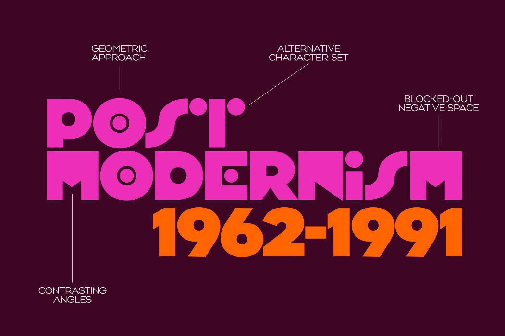
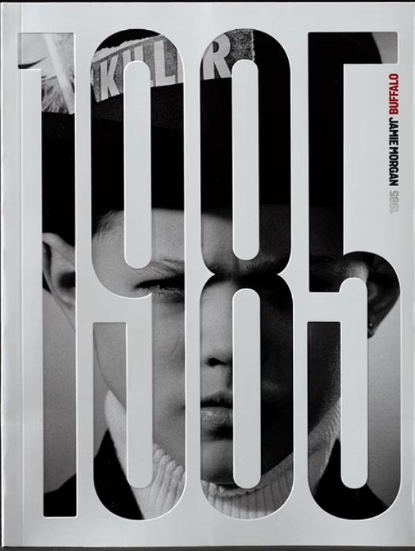
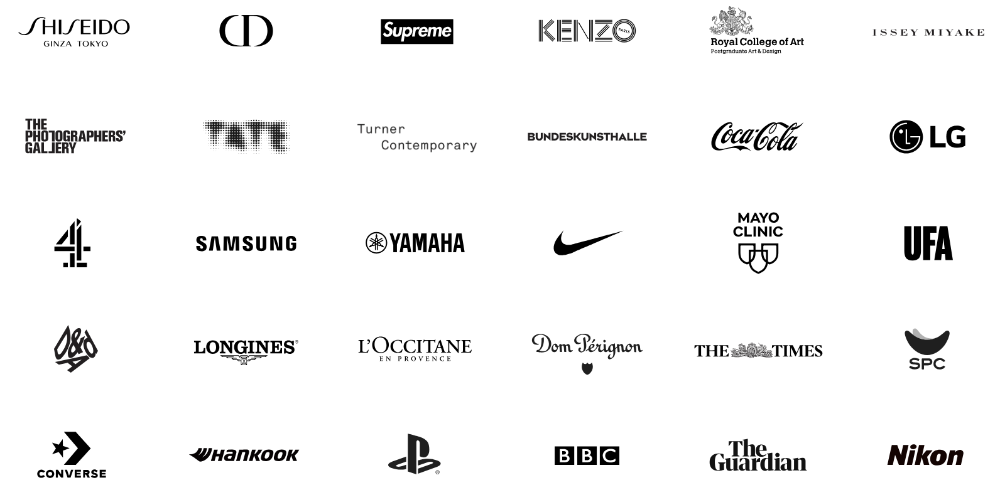
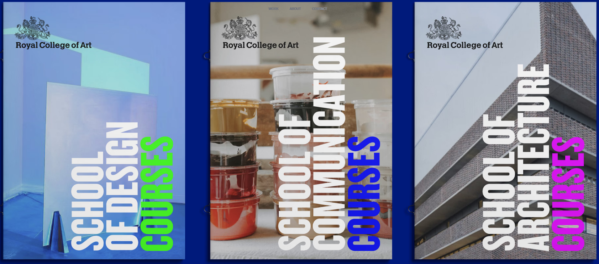

As his career progressed, Brody became a pioneer of digital typography. In 1991, he co-founded the FontFont typeface library with Erik Spiekermann and launched FUSE, an interactive magazine that challenged the boundaries of digital type design. His work shifted from the hand-pasted layouts of the 80s to sophisticated digital systems, leading to high-profile rebrands for the BBC, The Times, and Coca-Cola. His agency, Brody Associates (formerly Research Studios), has expanded globally, working with clients such as Samsung and Nike to create visual identities that balance commercial functionality with artistic disruption.

Recent retrospectives, such as The Graphic Language of Neville Brody 3, highlight his evolution from a counter-cultural rebel to a global design strategist and educator at the Royal College of Art. Even in the face of modern challenges like AI and the "sausage machine" of digital content delivery, Brody remains a vocal advocate for design that "disrupts the journey." His legacy is defined by a refusal to compromise, a commitment to "typo/graphism," and an enduring belief that graphic design should be a living, emotive experience rather than just a delivery system.



